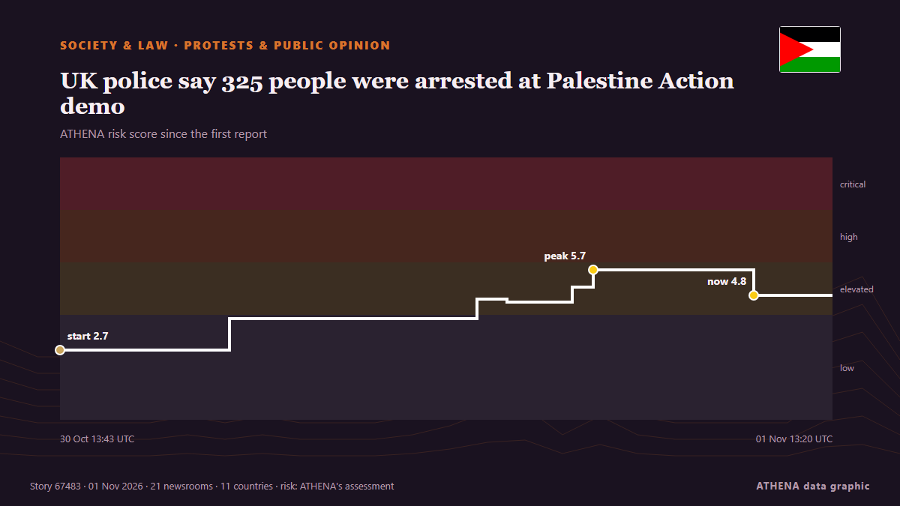

UK police say 325 people were arrested at Palestine Action demo

UK police arrested 325 demonstrators at a protest in support of Palestine Action outside the US embassy in London. von Arab News
Unabhängig gemeldet von 22 Medien in 12 Ländern seit dem 30. Okt., zuerst von Evening Standard (London); die Berichterstattung breitet sich weiter aus. ATHENA stuft das Risiko als erhöht ein (5.5/10), vor allem wegen der Schwere des beschriebenen Schadens und des Tempos der Berichterstattung. Die Konfidenz liegt bei 91 % (hoch): 22 Medien bestätigen es unabhängig, bei einer mittleren Verlässlichkeit der Quellen von 77 %. Medien nach Land: Vereinigtes Königreich (14), Vereinigte Staaten (4), Israel (2). Berichterstattung: 30. Okt. bis 1. Nov., 49 Stunden.
Warum es wichtig ist: Rechtliche und politische Änderungen verändern Rechte, Pflichten und öffentliche Leistungen für die Betroffenen.
Was sich geändert hat: 34 neue Berichte von 20 Redaktionen in den 24 Stunden bis 1. Nov..
Erste Schlagzeile: Met Police issue arrest warning for 'mass' pro-Palestine Action protest outside US Embassy in London
Schlagzeilen werden auf Englisch angezeigt, wie veröffentlicht.
Auf einen Blick
Ausgewählt, bewertet und geschrieben nach der veröffentlichten Methodik von ATHENA. Kein Redakteur greift in einzelne Ereignisse ein. So entsteht ATHENA ›
| 30 Oct 13:11 UTC | 1 |
|---|---|
| 30 Oct 15:11 UTC | 0 |
| 30 Oct 17:11 UTC | 0 |
| 30 Oct 19:11 UTC | 0 |
| 30 Oct 21:11 UTC | 0 |
| 30 Oct 23:11 UTC | 1 |
| 31 Oct 01:11 UTC | 0 |
| 31 Oct 03:11 UTC | 1 |
| 31 Oct 05:11 UTC | 0 |
| 31 Oct 07:11 UTC | 0 |
| 31 Oct 09:11 UTC | 0 |
| 31 Oct 11:11 UTC | 1 |
| 31 Oct 13:11 UTC | 3 |
| 31 Oct 15:11 UTC | 6 |
| 31 Oct 17:11 UTC | 7 |
| 31 Oct 19:11 UTC | 1 |
| 31 Oct 21:11 UTC | 5 |
| 31 Oct 23:11 UTC | 1 |
| 01 Nov 01:11 UTC | 0 |
| 01 Nov 03:11 UTC | 0 |
| 01 Nov 05:11 UTC | 0 |
| 01 Nov 07:11 UTC | 0 |
| 01 Nov 09:11 UTC | 4 |
| 01 Nov 11:11 UTC | 5 |
| 01 Nov 13:11 UTC | 2 |
| 30 Oct 13:43 UTC | 2.7 |
|---|---|
| 31 Oct 00:09 UTC | 3.9 |
| 31 Oct 15:25 UTC | 4.6 |
| 31 Oct 17:16 UTC | 4.5 |
| 31 Oct 21:18 UTC | 5.1 |
| 31 Oct 22:35 UTC | 5.7 |
| 01 Nov 08:29 UTC | 4.8 |
| 01 Nov 14:20 UTC | 5.5 |
Warum diese Zahlen
Bedeutung
Risiko
Konfidenz
Die Berichterstattung – wer berichtete, und wann
Schlagzeile wie veröffentlicht · öffnet das Original- Evening Standard (London) · Vereinigtes KönigreichMet Police issue arrest warning for 'mass' pro-Palestine Action protest outside US Embassy in London
- The Jerusalem Post · IsraelUK police warn of arrests ahead of Palestine Action protest at US Embassy
- Middle East Eye · INTAnyone attending, organising Palestine Action protest will be arrested, Metropolitan Police warns
- Evening Standard (London) · Vereinigtes KönigreichLondon protest LIVE: Dozens arrested at pro-Palestine Action demo outside US Embassy
- The Guardian · Vereinigtes KönigreichAlmost 140 arrested at protest against Palestine Action ban outside US embassy in London
- The Irish News (Belfast) · Vereinigtes KönigreichDemonstration supporting Palestine Action takes place in Edinburgh
- Belfast Telegraph · Vereinigtes KönigreichDemonstration supporting Palestine Action takes place in Edinburgh
- The Herald (Scotland) · Vereinigtes KönigreichDemonstration supporting Palestine Action takes place in Edinburgh
- The Irish News (Belfast) · Vereinigtes KönigreichDozens arrested outside US embassy after showing support for Palestine Action
- Belfast Telegraph · Vereinigtes KönigreichDozens arrested outside US embassy after showing support for Palestine Action
- Arab News · Saudi-ArabienDozens arrested outside London’s US Embassy at Palestine Action protest
- Middle East Eye · INTLondon police arrest dozens days before Supreme Court hearing on Palestine Action ban
- The Canadian Press (via CityNews) · KanadaLondon police arrest 139 people outside US Embassy for supporting banned pro-Palestinian group
- Al-Monitor · Vereinigte StaatenUK police arrest Palestine Action supporters ahead of Supreme Court hearing
- Anadolu Agency (English) · TürkeiUK police arrest 48 at protest supporting proscribed Palestine Action
- TASS (English) · RusslandPalestine Action supporters stage protest outside US Embassy in London
- CBS News (World) · Vereinigte StaatenPro-Palestinian protesters arrested outside U.S. Embassy in London
- Al Jazeera English · KatarLondon police arrest 139 as hundreds protest Palestine Action ban
- ABC News (International) · Vereinigte StaatenDozens arrested outside US Embassy in London for supporting proscribed pro-Palestinian group
- Evening Standard (London) · Vereinigtes KönigreichMore than 300 people arrested at London protest at US Embassy supporting banned Palestine Action group
- Free Malaysia Today · MalaysiaUK cops arrest Palestine Action supporters ahead of Supreme Court hearing
- Evening Standard (London) · Vereinigtes KönigreichMore than 100 arrested outside US embassy after supporting Palestine Action
- Belfast Telegraph · Vereinigtes KönigreichMore than 100 arrested outside US embassy after supporting Palestine Action
- Al Jazeera English · KatarPalestine Action supporters arrested outside US embassy in London
- TRT World · TürkeiBritish police arrest 139 Palestine Action activists ahead of Supreme Court appeal
- Middle East Eye · INTMargaret Owen, 94, arrested again during Palestine Action ban protest
- The Jerusalem Post · IsraelOver 130 arrested over Palestine Action terror designation protest outside US Embassy in London
- The New Arab · INTUK police arrest Palestine Action supporters ahead of hearing
- Belfast Telegraph · Vereinigtes KönigreichMore than 300 arrested outside US embassy after supporting Palestine Action
- Evening Standard (London) · Vereinigtes KönigreichMore than 300 arrested outside US embassy after supporting Palestine Action
- Arab News · Saudi-ArabienUK police say 325 people were arrested at Palestine Action demo
- The Herald (Scotland) · Vereinigtes KönigreichNo arrests at Scottish Palestine Action protest as 325 cuffed in London
- Free Malaysia Today · MalaysiaUK police say 325 people were arrested at Palestine Action demo
- Al-Monitor · Vereinigte StaatenUK police say 325 people were arrested at Palestine Action demo
- The Straits Times · SingapurBritish police say 325 people were arrested at Palestine Action demo
- People Daily · KeniaMore than 300 arrested at Palestine Action protest outside US embassy in London